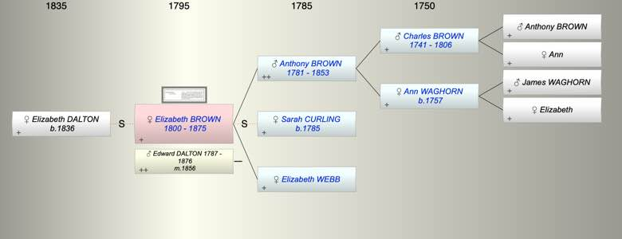

| [Index] |
| Elizabeth BROWN (1800 - 1875) |
|  |
| b. 06 Aug 1800 at London |
| m. 04 Sep 1856 Edward DALTON (1787 - 1876) at Kennington, Surrey |
| d. 09 Jun 1875 at Amberley, Glos aged 74 |
| Parents: |
| Anthony BROWN (1781 - 1853) |
| Elizabeth WEBB |
| Events in Elizabeth BROWN (1800 - 1875)'s life | |||||
| Date | Age | Event | Place | Notes | Src |
| 06 Aug 1800 | Elizabeth BROWN was born | London | Note 1 | ||
| 15 May 1853 | 52 | Death of father Anthony BROWN (aged 72) | Battersea, London | Note 2 | |
| 04 Sep 1856 | 56 | Married Edward DALTON (aged 69) | Kennington, Surrey | Note 3 | |
| 09 Jun 1875 | 74 | Elizabeth BROWN died | Amberley, Glos | Note 4 | |
| Personal Notes: |
| 1871 census living Dunkirk House Minchampton, Glos aged 70 b London with husband Edward Dalton 83? Barrister b London |
| Created on a Mac™ using iFamily for Mac™ on 8 Oct 2023 |